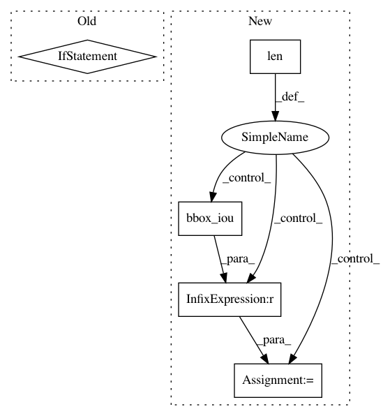

a7706fbde22887909db42f96a696437c084c05db,chainercv/evaluations/eval_detection_voc.py,,eval_detection_voc,#Any#Any#Any#Any#Any#Any#Any#Any#,11
Before Change
selec = np.zeros(gt_bbox_l.shape[0], dtype=bool)
for bb in pred_bbox_l:
if len(gt_bbox_l) > 0:
iou = bbox_iou(gt_bbox_l, bb[np.newaxis])
gt_idx = iou.argmax()
iou = iou[gt_idx]
else:
iou = -np.inf
if iou >= iou_thresh:
if gt_difficult_l[gt_idx]:
match[l].append(-1)
else:
After Change
n_pos[l] += np.logical_not(gt_difficult_l).sum()
score[l].extend(pred_score_l)
if len(pred_bbox_l) == 0:
continue
if len(gt_bbox_l) == 0:
match[l].extend((0,) * pred_bbox_l.shape[0])
continue
// VOC evaluation follows integer typed bounding boxes.
pred_bbox_l = pred_bbox_l.copy()
pred_bbox_l[:, 2:] += 1
gt_bbox_l = gt_bbox_l.copy()
gt_bbox_l[:, 2:] += 1
iou = bbox_iou(pred_bbox_l, gt_bbox_l)
gt_index = iou.argmax(axis=1)
match_ = iou.max(axis=1) >= iou_thresh
del iou
selec = np.zeros(gt_bbox_l.shape[0], dtype=bool)
for gt_idx, mc in six.moves.zip(gt_index, match_):
if mc:
if gt_difficult_l[gt_idx]:
match[l].append(-1)
else:
if not selec[gt_idx]:
match[l].append(1)
else:
match[l].append(0)
selec[gt_idx] = True
else:
match[l].append(0)
for iter_ in (
pred_bboxes, pred_labels, pred_scores,
gt_bboxes, gt_labels, gt_difficults):
if next(iter_, None) is not None:
In pattern: SUPERPATTERN
Frequency: 3
Non-data size: 5
Instances
Project Name: chainer/chainercv
Commit Name: a7706fbde22887909db42f96a696437c084c05db
Time: 2017-05-31
Author: Hakuyume@users.noreply.github.com
File Name: chainercv/evaluations/eval_detection_voc.py
Class Name:
Method Name: eval_detection_voc
Project Name: ultralytics/yolov3
Commit Name: e4d62de5bc12d1e411adbfe4b76f15d157d77c65
Time: 2019-02-18
Author: glenn.jocher@ultralytics.com
File Name: utils/utils.py
Class Name:
Method Name: non_max_suppression
Project Name: ultralytics/yolov3
Commit Name: 2df8d7e9f6fd3a3e0233029bf39d4db66807a229
Time: 2019-03-15
Author: glenn.jocher@ultralytics.com
File Name: utils/utils.py
Class Name:
Method Name: non_max_suppression